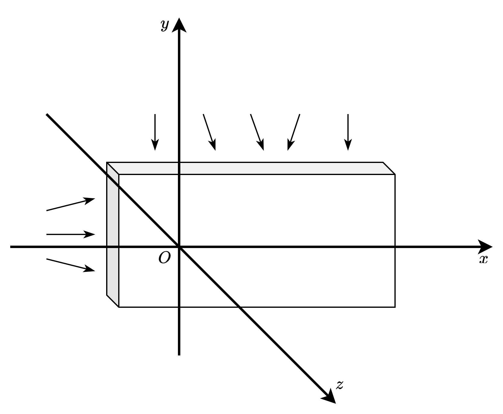
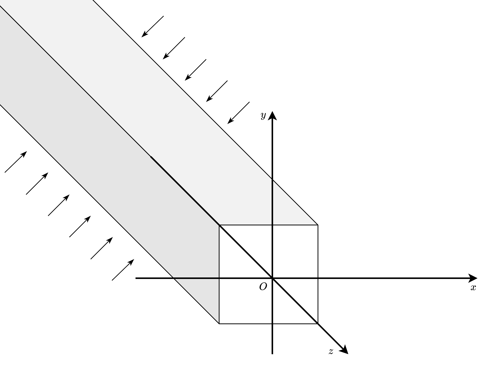

弹性体作为空间物体，其实际问题通常为空间问题。然而，当弹性体具有特殊形状，且受特定外力与约束时，可将空间问题简化为平面问题，从而降低计算复杂度，同时满足工程精度要求。接下来将讨论两类问题：平面应力问题和平面应变问题
平面应力问题
下图展示了等厚薄板的受力情况，其中厚度远小于板的长度与宽度

Fig. 7 等厚薄板的受力情况
薄板仅在边缘的 \(x\) 轴截面和 \(y\) 轴截面上受到不随厚度变化的外力，而在边缘的 \(z\) 轴截面上无外力作用。由于薄板足够薄，因此在薄板内的任意一点都满足
\[
\sigma_{z}=0,\quad \tau_{zx} = 0,\quad \tau_{zy} = 0.
\]
此外，由切应力互等定理，有
\[
\tau_{xz} = 0,\quad \tau_{yz} = 0.
\]
因此，\(\gamma_{zx} = \gamma_{zy} = 0\)
由于薄板很薄，且作用力不随厚度变化，因此可以认为应力分量 \(\sigma_{x},\sigma_{y}, \tau_{xy}\) 和应变分量 \(\epsilon_{x},\epsilon_{y}, \gamma_{xy}\) 是关于 \(x\) 和 \(y\) 的函数，不随 \(z\) 变化
这类问题被称为平面应力问题，
此时，方程 (7) 可简化为
(9)\[\begin{split}
\begin{equation}
\begin{aligned}
&\epsilon_x = \frac{1}{E} ( \sigma_x - \mu \sigma_y ),\\
&\epsilon_y = \frac{1}{E} (\sigma_y - \mu \sigma_x ),\\
&\gamma_{xy} = \frac{2(1+\mu)}{E} \tau_{xy}.
\end{aligned}
\end{equation}
\end{split}\]
此外，\(\epsilon_z\) 可通过 \(\epsilon_z=-\frac{\mu}{E} (\sigma_x + \sigma_y)\) 求得
Note
物质的宏观形变源于微观分子结构及分子间作用力的耦合效应。因此，即使某方向无外力作用，内部应力传递仍可能导致该方向形变。
在平面应力问题中，所求解的方程组是
(10)\[\begin{split}
\begin{equation}
\begin{aligned}
&\frac{\partial \sigma_x}{\partial x} + \frac{\partial \tau_{yx}}{\partial y} + f_x = 0, \\
&\frac{\partial \sigma_y}{\partial y} + \frac{\partial \tau_{xy}}{\partial x} + f_y = 0,\\
&\epsilon_x = \frac{\partial u}{\partial x}, \\
&\epsilon_y = \frac{\partial v}{\partial y}, \\
&\gamma_{xy} = \frac{\partial v}{\partial x} + \frac{\partial u}{\partial y},\\
&\epsilon_x = \frac{1}{E} ( \sigma_x - \mu \sigma_y ),\\
&\epsilon_y = \frac{1}{E} (\sigma_y - \mu \sigma_x ),\\
&\gamma_{xy} = \frac{2(1+\mu)}{E} \tau_{xy},
\end{aligned}
\end{equation}
\end{split}\]
求解变量为
\[
\sigma_{x}, \, \sigma_{y}, \, \tau_{xy}, \, \epsilon_{x}, \, \epsilon_{y}, \, \gamma_{xy}, \, u, \, v
\]
平面应变问题
假设有无限长的等截面柱形体，柱面上受有平行于 \(z\) 轴截面且不随长度变化的力（面力、体力）或约束

Fig. 8 等截面柱形体的受力情况
假设柱体无限长，则任意 \(z\) 轴截面上的应力、应变和位移分量均不随 \(z\) 方向变化，仅为 \(x\) 和 \(y\) 的函数。
此外，由于对称性，位移仅沿 \(x\) 和 \(y\) 方向发生，且 \(z\) 轴截面上各点的切应力均为 0，因此
\[
\epsilon_{z} = 0,\quad \tau_{zx} = 0,\quad \tau_{zy}=0.
\]
由胡克定律（见(7)），有
\[
\gamma_{zx} = 0,\quad \gamma_{zy} = 0.
\]
代入 \(\sigma_{z}=\mu(\sigma_x + \sigma_y)\) 消去 \(\sigma_{z}\)，方程 (7) 可简化为
(11)\[\begin{split}
\begin{equation}
\begin{aligned}
&\varepsilon_x = \frac{1 - \mu^2}{E} \left( \sigma_x - \frac{\mu}{1 - \mu} \sigma_y \right), \\
&\varepsilon_y = \frac{1 - \mu^2}{E} \left( \sigma_y - \frac{\mu}{1 - \mu} \sigma_x \right), \\
&\gamma_{xy} = \frac{2(1 + \mu)}{E} \tau_{xy}.
\end{aligned}
\end{equation}
\end{split}\]
在平面应变问题中，所求解的方程组是
(12)\[\begin{split}
\begin{equation}
\begin{aligned}
&\frac{\partial \sigma_x}{\partial x} + \frac{\partial \tau_{yx}}{\partial y} + f_x = 0, \\
&\frac{\partial \sigma_y}{\partial y} + \frac{\partial \tau_{xy}}{\partial x} + f_y = 0,\\
&\epsilon_x = \frac{\partial u}{\partial x}, \\
&\epsilon_y = \frac{\partial v}{\partial y}, \\
&\gamma_{xy} = \frac{\partial v}{\partial x} + \frac{\partial u}{\partial y},\\
&\varepsilon_x = \frac{1 - \mu^2}{E} \left( \sigma_x - \frac{\mu}{1 - \mu} \sigma_y \right), \\
&\varepsilon_y = \frac{1 - \mu^2}{E} \left( \sigma_y - \frac{\mu}{1 - \mu} \sigma_x \right), \\
&\gamma_{xy} = \frac{2(1 + \mu)}{E} \tau_{xy},
\end{aligned}
\end{equation}
\end{split}\]
求解变量为
\[
\sigma_{x}, \, \sigma_{y}, \, \tau_{xy}, \, \epsilon_{x}, \, \epsilon_{y}, \, \gamma_{xy}, \, u, \, v
\]
Note
在平面应力问题的方程 (9) 中，如果将 \(E\) 和 \(\mu\) 分别替换为
\[
\frac{E}{1-\mu^2},\quad \frac{\mu}{1-\mu}
\]
就能够得到平面应变问题。如果已经得到平面应力问题的（解析）解，只需将 \(E\) 和 \(\mu\) 作同样的转换，就可以得到相应的平面应变问题的解
{kind=link}
{kind=link}